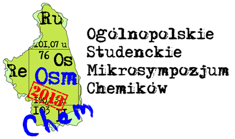
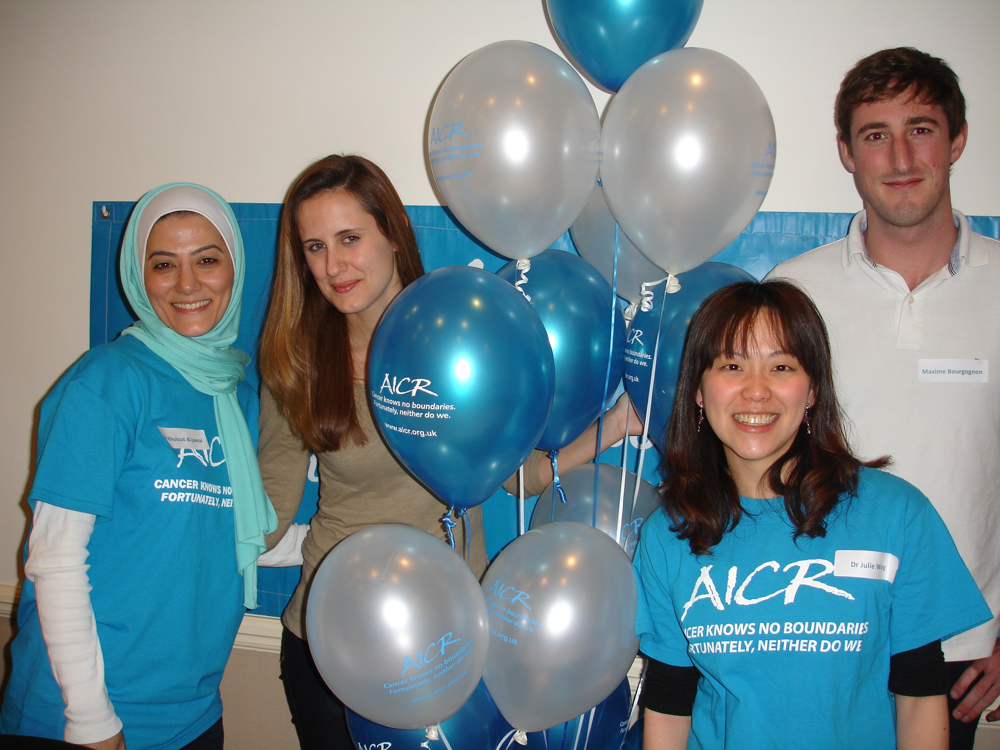
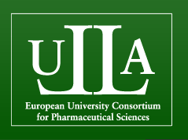
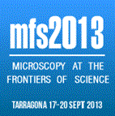

RADDEL Newsletter 01 - May 2013
- Created on 14 May 2013
The first annual RADDEL Newsletter is available for downloading (please click on the image for the .pdf version). In the first part, an introduction about the project is given along with a description of the different parters participating in the consortium. Then, the fellows recruited so far throughout the network are introduced, including the research project they will be working in. Finally, a summary of all the meetings and training events that took place during the first year of the project.
In the next issue an update of the training activities that the fellows are participating in will be included, along with information about recruitment, dissemination and outreach in relationship with the project. A summary of any scientific results obtained so far in the network will be also presented.
ESR fellow to deliver an invited talk at the Polish National Microsymposium of Chemistry Students 2013
- Created on 08 May 2013
RADDEL ESR fellow Magdalena Kierkowicz from the Institute of Materials Science of Barcelona (ICMAB-CSIC) has been invited to deliver an oral talk at the 2nd Polish National Microsymposium of Chemistry Students - "Chemistry, the Future Starts Today" which will take place on 17-19th May in Bialystok (Poland):
https://sites.google.com/site/osmchem/
The symposium will be attended by around 70 students from Poland and Ukraine, with 5 keynote speakers and several oral and poster presentations. Magdalena will deliver an oral talk titled:
"Tailored single-layered carbon nanocapsules - first step towards an innovative cancer therapy"

Congratulations to Magdalena!
KCL's PhD student to gain microscopy skills in Spain
- Created on 24 April 2013
As a Marie-Curie Initial Training Network, RADDEL is not only designed to give a specific training program to the recruited fellows but also to give the opportunity to students from the participant teams and external to the network to visit partner labs and gain complementary skills.
Mr Houmam Kafa, a PhD student in the Drug Delivery Group of the Institute of Pharmaceutical Science (King's College London), will spend one month in the laboratory of Dr Belén Ballesteros at the Catalan Institute of Nanotechnology (ICN) in Spain learning state-of-the-art specialized electron microscopy techniques to characterize interactions between carbon nano-needles and porcine brain endothelial cell co-cultures.

RADDEL team from KCL taking part in Virgin London Marathon 2013
- Created on 24 April 2013
RADDEL team from the Drug Delivery Group at King’s College London (Dr. Khuloud Al-Jamal and fellows Mr. Maxime Bourgognon and Miss Rebecca Klippstein Martin) has joined the Association for International Cancer Research (AICR) in their fund raising event for this year’s Virgin London Marathon. AICR had approximately 40 runners taking part in the 2013 Virgin London Marathon. The runner team has successfully made their target of just under £100,000. Each of them has an amazing story to tell about a day they will remember for the rest of their lives.
Further details on the event can be found on:
http://www.aicr.org.uk/LondonMarathon2013.stm
Congratulations!!!

From left to right: Dr. Khuloud Al-Jamal (scientist-in-charge for KCL in RADDEL), Rebeca Klippstein (RADDEL ESR fellow), Dr. Julie Wang (research associate at KCL) and Maxime Bourgognon (RADDEL ESR fellow).
RADDEL Training activities 2013
- Created on 22 March 2013
After the successful workshop on "Development and Marketing of Radiopharmaceuticals at an Industrial level" that took place in February in Strasbourg (France), several other training activities in the form of workshops and schools are programmed for RADDEL fellows during 2013.
On June (10-21st) a Workshop on Transmission Electron Microscopy 2013 is being organised by RADDEL partner EMAT:
The workshop is organized in the framework of ESTEEM2, ESMI, IFOX, the IAP network on “Functional supramolecular systems” and the COST action on “Nanostructured materials for solid-state hydrogen storage”. A state-of-the-art training in Transmission Electron Microscopy at the highest level is provided. Lectures will be given by staff members of the EMAT research group and special topics are covered by guest lecturers. The main focus of the workshop is to provide practical experience with a broad range of TEM instruments. We offer the choice between 3 different modules, “High resolution TEM, TEM Spectroscopy” or “TEM on sensitive materials”, preceded by a workshop on “Basic TEM”
One month later (7-13th July), the ULLA (European University Consortium for Pharmaceutical Sciences) is organising an ULLA Postgraduate Summer School 2013 at the RADDEL partner UCL School of Pharmacy facilities:
http://ullapharmsci.org/summer-schools/

The summer school allows postgraduates to widen their knowledge of updated key issues regarding for instance drug discovery, drug development and the economic and management issues facing the industry today and tomorrow. Just as importantly it gives postgraduates an optimal opportunity have a great time and to create an international network.
Finally on September, two of the partners participating in RADDEL (CSIC and ICN) are amongst the organisers of the congress Microscopy at the Frontiers of Science 2013:

This congress will cover all aspects of Microscopy applied to Life Sciences, Materials Sciences and all other Fields of Sciences in which Microscopy plays a fundamental role.
These 3 activities are external to the network but open to all RADDEL fellows to attend. Some other training activities specific for this project are being also planned and organised for the coming months, including a School on Nanomedicine, a Hands-on-school on Spectroscopy Applied to Materials Science and the II RADDEL Workshop on Complementary Training.
Any update with respect to the training activities will be posted in this section, in the meantime remember that you can also follow us on Facebook:
http://www.facebook.com/raddelproject